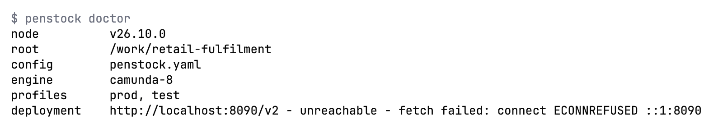
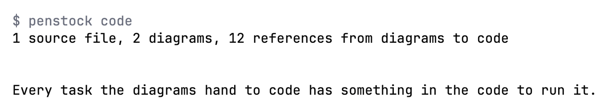
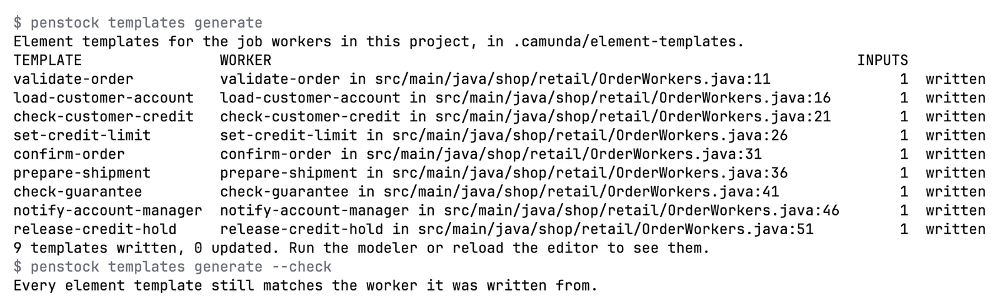
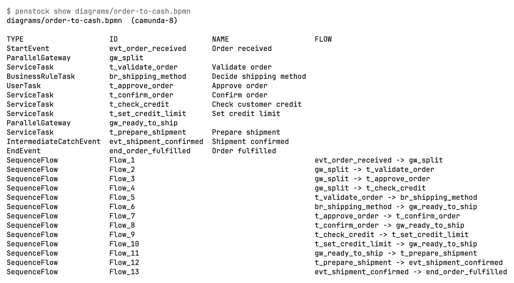

Command line / Reference
Every command
Every penstock command, one by one: what it does, its options, an example, what it needs and its exit codes.
All commands at a glance
| Command | What it does | Needs |
|---|---|---|
init | Set up a project. | Free |
doctor | Check the setup. | Free |
check | Everything wrong with the diagrams. | Free. Flow, SARIF, baselines: Pro, Team in a pipeline |
migrate | Camunda 7 to Camunda 8. | Free. convert: Pro, Team in a pipeline |
code | Diagrams against code. | Pro, Team in a pipeline |
templates generate | Write an element template for every job worker. | Pro, Team in a pipeline |
templates check | Check the templates against the workers. | Free |
scenarios list | Every way through each process. | Pro, Team in a pipeline |
scenarios run | Run the test-case files on an engine. | Pro, Team in a pipeline |
scenarios generate | Write the test-case files from the ways through. | Pro, Team in a pipeline |
test-cases | The command behind scenarios run and scenarios generate. | Pro, Team in a pipeline |
junit | Write a JUnit test for every way through. | Pro, Team in a pipeline |
layout | Auto layout. | Pro, Team in a pipeline |
fmt | Format the XML. | Free |
diff | What changed. | Free. --images: Pro, Team in a pipeline |
export | Pictures of diagrams. | Free |
share | One HTML file. | Free |
import | From draw.io, Visio, Signavio, Bizagi. | Free |
docs | Documentation pages. | Pro, Team in a pipeline |
report | A pull request comment. | Pro, Team in a pipeline |
bot | The review bot. | Pro, Team in a pipeline |
deploy | Send to the engine. | Free |
show | List a diagram's elements. | Free |
edit | Change a diagram. | Pro, Team in a pipeline (--schema is free) |
license | Buy, sign in, status. | Free |
trust | Let a project run its hooks. | Free |
mcp | Serve diagrams to an AI agent. | Free to read. Other tools: Pro, Team in a pipeline |
connectors | Camunda connector templates. | Free |
update | Move the wrapper to a version. | Free |
web | The editors in a browser, on this machine. | Free |
agent | Start an AI agent with the Penstock tools. | Free |
agent serve | Serve the AI chat of a project to an editor. | Free to start. Sending a message: Pro, Team in a pipeline |
A command marked Pro, Team in a pipeline is a paid one. One rule decides what it needs: Pro on your machine, Team in a pipeline, which is any run where CI is set. See Paid commands. penstock help and penstock --version print the overview and the version, and penstock <command> --help prints the page of one command, with the same options, example, tier and exit codes as here.
Options that many commands share
--profile <name> | Use this profile, as PENSTOCK_PROFILE would. Every command takes it. See Profiles. |
--format text|json|sarif|github|md | How a command reports itself. Each command takes only some of these, and says which below. |
--out <dir>, -o | Where a command puts what it writes. For share and import, -o is the file. |
--lang <tag> | The language of the answer: en, ru, de, zh, ja, ko, es, pt-BR or fr. Without it LANG, then LC_MESSAGES, then LC_ALL decide, and English is the fallback. |
--help | Print the help and stop. The help ends with a line, The guide:, and the address of this guide. |
--version | Print the version. |
Exit codes
Every command lists its own exit codes below. They follow one rule.
0 | The command did what it was asked, and there was nothing to act on. |
1 | Something a person can act on: findings, a path that is not there, a file that is not a diagram, a value an option does not take, a licence this machine does not have. |
2 | The command line itself failed, not the command. The message says what. |
130 | Only scenarios run, scenarios generate and test-cases: Ctrl and C twice. |
A command that produces a findings table and finds something exits with 1 and still writes the table to standard output. A refusal, such as a missing path or a licence message, goes to standard error. A machine format (json, sarif, github) is always written to standard output, even when it reports errors.
init
Write a penstock.yaml for this project: the engine it runs on, the rules, the profiles and the deployment. Asked in a terminal when the folder is empty and nothing says otherwise.
penstock init [folder] [--engine camunda-8|camunda-7|operaton|cib-seven|classic] [--ci github|gitea|gitlab|bitbucket|azure] [--hooks]- Writes
penstock.yamlwith the engine you chose, or guessed from your diagrams. If a file exists, it is kept and the command says so. - Adds
penstock.local.yamlto.gitignore. - Installs the wrapper:
penstockw,penstockw.cmdandpenstock/wrapper/penstock-wrapper.properties. See The wrapper.
| Option | What it does |
|---|---|
--engine <name> | camunda-8, camunda-7, operaton, cib-seven or classic. |
--example <name> | camunda-8 or camunda-7, to write a small runnable project into an empty folder. |
--ci <name> | github, gitea, gitlab, bitbucket or azure: write a pipeline for the tier this machine has. |
--hooks | Install a pre-commit hook that formats and checks staged diagrams. |
--profile <name> | Use this profile, as PENSTOCK_PROFILE would. |
In a terminal, on an empty folder with no --engine, init asks which engine with a numbered choice. Anywhere else it guesses from the diagrams. --example writes a small runnable project into an empty folder: see The example project. --ci also writes a pipeline for the licence on this machine, and forgejo is accepted too although the help does not list it: see Pipelines, reports and the bot. --hooks installs a pre-commit hook that formats and checks the diagrams a commit carries. It lives in .git/hooks, so it is yours, and deleting the file stops it. It runs fmt --write on the staged diagrams, stages the result, and then check --baseline, which needs Pro. Outside a Git repository it says hooks - this is not a git repository and skips the hook, and a pre-commit hook that is not Penstock's is kept as it is.
The hook runs the Penstock command line it finds, in this order: the project's penstockw, penstock on the PATH, then the one in the project's node_modules. Only when none of them is there, and the command line that wrote the hook is a published release, does it ask npm, and then for that exact version. With none installed it prints one line on standard error that says where to install the command line, and lets the commit through.
Example
$ penstock init --engine camunda-8
Needs: Free
| Exit code | Meaning |
|---|---|
0 | The file was written. |
1 | The folder could not be written, or the file is already there. |
2 | The CLI itself failed, not the command; the message says what. |
doctor
Check the setup: which configuration layers are in force, which profiles, rules, element templates and engine.
penstock doctor [folder] [--format json]$ penstock doctor
node v26.10.0
root /private/tmp/pex
config penstock.yaml
engine camunda-8
profiles (none)
deployment http://localhost:8080/v2 - answered 404| Option | What it does |
|---|---|
--format <text|json> | json prints the configuration as it resolved, for a tool to read. |
--profile <name> | Use this profile, as PENSTOCK_PROFILE would. |
It prints the Node version, the project root, the configuration files that apply, any problem in them, the engine, the profiles (a star marks the one in force), the rules file and the element template paths (marked missing when they are not there), and whether the deployment address answers, with a 4 second timeout. It also says when the deployment credentials are incomplete. --format json prints the settings as they resolve after every layer.
Example
$ penstock doctor --format json
Needs: Free
| Exit code | Meaning |
|---|---|
0 | The setup was read. |
1 | Something in it could not be read, and the answer says what. |
2 | The CLI itself failed, not the command; the message says what. |
check
Everything wrong with the diagrams, in sections: the drawing itself, the bpmnlint rules and, on Pro, how the processes, decisions and forms actually run.
penstock check [paths...] [--only drawing,rules,flow] [--format text|json|sarif|github] [--baseline] [--update-baseline]$ penstock check .
ok src/main/resources/approve-order.form
fail src/main/resources/order-process.bpmn
OVERLAP: approve_order <-> charge_card
note bpmnlint/no-overlapping-elements: Element overlaps with other element (approve_order)
ok src/main/resources/shipping-method.dmnChecks .bpmn, .dmn and .form files in three sections: drawing, rules (bpmnlint, and the engine compatibility rules) and flow (how the processes, decisions and forms run). Only errors fail the command. The form check is lint and is free. Flow analysis of processes and decisions is paid. --update-baseline writes the findings to penstock-baseline.json: commit it, and refresh it after an upgrade. --trust-project lets this project's hooks run for this one run, without recording anything. Hooks: preCheck and postCheck. See Diagram check, Validation and Flow analysis.
| Option | What it does |
|---|---|
--only <sections> | which parts to run: drawing, rules, flow. |
--format <format> | text, json, sarif or github; sarif and github are for a code review. |
--baseline | Fail only on findings the baseline does not already accept. |
--update-baseline | Write the current findings as the baseline. |
--trust-project | Let this project's penstock.yaml run its hooks for this run, without writing anything down. |
--profile <name> | Use this profile, as PENSTOCK_PROFILE would. |
Example
$ penstock check --only rules src/orders
Needs: Free With --only flow, --baseline or --format sarif|github: Pro, Team in a pipeline
| Exit code | Meaning |
|---|---|
0 | Nothing was found, or everything found is in the baseline. |
1 | Something was found that a person can act on. |
2 | The CLI itself failed, not the command; the message says what. |
migrate analyze
Read the Camunda 7 diagrams and say what does not carry over to Camunda 8, and why.
penstock migrate analyze [paths...] [--format text|json|sarif|github] [--baseline] [--update-baseline]penstock migrate [analyze|convert|report] [paths]. Without a word it runs analyze. The full description is on Camunda 7 to 8. All three take the options below; --target takes a version from 8.5 to 8.9, and the help names 8.8 as the default.
| Option | What it does |
|---|---|
--format <format> | text, json, sarif or github. |
--out <dir> | Where the report, or the converted files, are written. |
--dry-run | Say what would be written and write nothing. |
--target <version> | The Camunda 8 version to convert for, 8.8 by default. |
--fail-on <error|warning> | What makes the exit code 1: error, or warning. |
--baseline | Fail only on findings the baseline does not already accept. |
--update-baseline | Write the current findings as the baseline. |
--verbose | List and annotate what only carries over as it is. |
--profile <name> | Use this profile, as PENSTOCK_PROFILE would. |
Example
$ penstock migrate analyze src/ordersNeeds: Free With --baseline or --format sarif|github: Pro, Team in a pipeline
| Exit code | Meaning |
|---|---|
0 | Nothing would be lost, or everything lost is in the baseline. |
1 | Something would be lost. |
2 | The CLI itself failed, not the command; the message says what. |
migrate convert
Write the Camunda 8 files into a camunda-8 folder next to the one given, with a penstock.yaml of their own. Nothing else in the project is touched.
penstock migrate convert [paths...] [--target 8.5..8.9] [--out <dir>] [--dry-run]Writes the Camunda 8 files into a camunda-8 folder next to the one given, with a penstock.yaml of their own that says engine: camunda-8. Nothing else in the project is touched, so the Camunda 7 files stay as they are. --out chooses another folder. --dry-run says what would be written and writes nothing.
| Option | What it does |
|---|---|
--format <format> | text, json, sarif or github. |
--out <dir> | Where the report, or the converted files, are written. |
--dry-run | Say what would be written and write nothing. |
--target <version> | The Camunda 8 version to convert for, 8.8 by default. |
--fail-on <error|warning> | What makes the exit code 1: error, or warning. |
--baseline | Fail only on findings the baseline does not already accept. |
--update-baseline | Write the current findings as the baseline. |
--verbose | List and annotate what only carries over as it is. |
--profile <name> | Use this profile, as PENSTOCK_PROFILE would. |
Example
$ penstock migrate convert --target 8.8 --dry-run src/ordersNeeds: Pro, Team in a pipeline Analysis and the report are free.
| Exit code | Meaning |
|---|---|
0 | The files were written, or --dry-run found nothing to write. |
1 | Something could not be converted, and the answer says which. |
2 | The CLI itself failed, not the command; the message says what. |
migrate report
Write the migration report to hand on: what each diagram became, and what did not come across.
penstock migrate report [paths...] [--out <dir>]Writes the migration report, Markdown and one self-contained HTML page: what each diagram became and what did not come across.
| Option | What it does |
|---|---|
--format <format> | text, json, sarif or github. |
--out <dir> | Where the report, or the converted files, are written. |
--dry-run | Say what would be written and write nothing. |
--target <version> | The Camunda 8 version to convert for, 8.8 by default. |
--fail-on <error|warning> | What makes the exit code 1: error, or warning. |
--baseline | Fail only on findings the baseline does not already accept. |
--update-baseline | Write the current findings as the baseline. |
--verbose | List and annotate what only carries over as it is. |
--profile <name> | Use this profile, as PENSTOCK_PROFILE would. |
Example
$ penstock migrate report --out docsNeeds: Free
| Exit code | Meaning |
|---|---|
0 | The report was written. |
1 | It could not be written, and the answer says where it tried. |
2 | The CLI itself failed, not the command; the message says what. |
code
Check the diagrams against the code: job types, topics, classes and beans with nothing to run them, and workers no diagram uses.
penstock code [paths...] [--format text|json]Reports a job type, topic, class or bean that nothing runs, a called process no diagram defines, and a worker no diagram uses, each with file and line. Reads the repositories in linked. See Code links.
| Option | What it does |
|---|---|
--format <text|json> | How the findings are reported. |
--profile <name> | Use this profile, as PENSTOCK_PROFILE would. |
Example
$ penstock code src/orders
Needs: Pro, Team in a pipeline
| Exit code | Meaning |
|---|---|
0 | Every worker and every reference lines up. |
1 | Something does not, and the answer names it. |
2 | The CLI itself failed, not the command; the message says what. |
templates generate
Write an element template for every job worker the project has, into .camunda/element-templates, so the Camunda palette fills itself in.
penstock templates generate [folder]Reads the Java, Kotlin, Groovy and Scala sources under the folder, finds every job worker, and writes an element template for each into .camunda/element-templates. A template that exists is updated, not replaced. It lists each template with its worker, file and line, the number of inputs, and what it did. With no worker in the project it exits with 1. --check writes nothing and does what templates check does. The editors do the same for one worker with Create element template. See Element templates.
| Option | What it does |
|---|---|
--check | Check instead of write: the same as templates check, and writes nothing. |
--profile <name> | Use this profile, as PENSTOCK_PROFILE would. |
Example
$ penstock templates generate
Needs: Pro, Team in a pipeline
| Exit code | Meaning |
|---|---|
0 | Every worker has a template. |
1 | A worker could not be written, and the answer names it. |
2 | The CLI itself failed, not the command; the message says what. |
templates check
Check that every element template still says what its job worker asks for, and that every worker has one. Writes nothing.
penstock templates check [folder]Checks that every element template still asks for what its worker reads, and that every worker has one. A template that has drifted is listed with what it is missing, what it has extra and what has another type, and the exit code is 1, so it works in a pipeline. With no templates in .camunda/element-templates it says so and exits with 0. It writes nothing.
| Option | What it does |
|---|---|
--check | What templates generate takes to do this instead of writing. |
--profile <name> | Use this profile, as PENSTOCK_PROFILE would. |
Example
$ penstock templates checkNeeds: Free
| Exit code | Meaning |
|---|---|
0 | Every template still matches its worker. |
1 | A template has drifted, and the answer says how. |
2 | The CLI itself failed, not the command; the message says what. |
scenarios list
List every distinct way through each process, with the conditions it takes. This is a test plan.
penstock scenarios list [paths...] [--format text|json|md]A test plan, in words: the path and the conditions that decide it. --format md writes a checklist a person can work through. --format json is for tools. See Process tests and coverage.
| Option | What it does |
|---|---|
--format <text|json|md> | How the scenarios are listed; md is a page a person reads. |
--profile <name> | Use this profile, as PENSTOCK_PROFILE would. |
Example
$ penstock scenarios list --format mdNeeds: Pro, Team in a pipeline
| Exit code | Meaning |
|---|---|
0 | The scenarios were listed. |
1 | A process could not be read, and the answer names it. |
2 | The CLI itself failed, not the command; the message says what. |
scenarios run
Run the Camunda test-case files of the diagrams against the engine they name, step by step, with the mocks the file asks for.
penstock scenarios run [paths...] [--timeout <seconds>] [--junit-xml <file>] [--junit] [--teamcity]Runs the Camunda test-case files of the diagrams against the engine they name, step by step, with the mocks the file asks for. Every case is checked against the Camunda Process Test schema (8.9 and 8.10) before the run: fifteen instructions run and are written back unchanged, and the thirteen Penstock cannot run yet are named in a message instead of being dropped. A run deploys a test build of its own, prefixed penstock.<run>., so the definitions you deployed are not touched. In a pipeline the engine needs deployment.forTests: true. Press Ctrl and C once to ask the engine to stop and keep going, and twice to cancel the running case and remove its build. See Scenarios.
| Option | What it does |
|---|---|
--timeout <seconds> | How long one step may take, 30 by default. |
--junit-xml <file> | Where a JUnit XML report is written. |
--junit | Write a Camunda Process Test class that runs them instead. |
--teamcity | Report as TeamCity service messages, as the IDE reads them. |
--profile <name> | Use this profile, as PENSTOCK_PROFILE would. |
Example
$ penstock scenarios run --junit-xml target/scenarios.xml
Needs: Pro, Team in a pipeline
| Exit code | Meaning |
|---|---|
0 | The run finished with no failing case. |
1 | A case failed, or the engine could not be reached. |
2 | The CLI itself failed, not the command; the message says what. |
130 | Ctrl-C twice: the case is cancelled, its build removed, and the run stops. |
scenarios generate
Write the Camunda test-case files from the ways through each process, which scenarios run then plays back against an engine.
penstock scenarios generate [paths...]Writes the Camunda test-case files from the ways through each process: one scenario for every way through, with example variables and a completing mock for each task. A process that starts on a message, a timer or a signal is planned from that start event, and a start kind that cannot be expressed as a scenario is said in the review rather than left out quietly. Cases already in a file are kept. See Scenarios.
scenarios generate is test-cases --generate. Two old names still work and are left out of the help: paths is scenarios list, and tests is junit.
| Option | What it does |
|---|---|
--timeout <seconds> | How long one step may take, 30 by default. |
--junit-xml <file> | Where a JUnit XML report is written. |
--teamcity | Report as TeamCity service messages, as the IDE reads them. |
--profile <name> | Use this profile, as PENSTOCK_PROFILE would. |
Example
$ penstock scenarios generate src/ordersNeeds: Pro, Team in a pipeline
| Exit code | Meaning |
|---|---|
0 | The run finished with no failing case. |
1 | A case failed, or the engine could not be reached. |
2 | The CLI itself failed, not the command; the message says what. |
130 | Ctrl-C twice: the case is cancelled, its build removed, and the run stops. |
test-cases
The command behind scenarios run and scenarios generate: run the Camunda test-case files of the diagrams against the engine they name, step by step, with the mocks the file asks for. --generate writes those files from the ways through each process instead.
penstock test-cases [paths...] [--generate] [--junit] [--junit-xml <file>] [--timeout <seconds>] [--teamcity]penstock test-cases is scenarios run, and penstock test-cases --generate is scenarios generate. Both names run the same code, so a script that already says test-cases keeps working. A value of --timeout that is not a number of seconds is refused before any case runs: The timeout should be a number of seconds.
| Option | What it does |
|---|---|
--generate | Write the test-case files from the ways through each process, instead of running them. |
--junit | Write a Camunda Process Test class that runs them instead. |
--junit-xml <file> | Where a JUnit XML report is written. |
--timeout <seconds> | How long one step may take, 30 by default. |
--teamcity | Report as TeamCity service messages, as the IDE reads them. |
--profile <name> | Use this profile, as PENSTOCK_PROFILE would. |
Example
$ penstock test-cases --junit-xml target/scenarios.xmlNeeds: Pro, Team in a pipeline
| Exit code | Meaning |
|---|---|
0 | The run finished with no failing case. |
1 | A case failed, or the engine could not be reached. |
2 | The CLI itself failed, not the command; the message says what. |
130 | Ctrl-C twice: the case is cancelled, its build removed, and the run stops. |
junit
Write a JUnit test for every way through each process, with the variables that take it there, for Camunda Process Test or camunda-bpm-assert.
penstock junit [paths...] [--out <dir>] [--package <name>]Writes a JUnit test for every way through each process, with the variables that take it there, for Camunda Process Test or camunda-bpm-assert. The command names the test dependencies your build lacks, using each engine's own Java packages: org.camunda for Camunda 7, org.operaton for Operaton, org.cibseven for CIB seven. See Process tests and coverage.
| Option | What it does |
|---|---|
--out <dir> | Where the tests are written. |
--package <name> | The package the tests are written in. |
--profile <name> | Use this profile, as PENSTOCK_PROFILE would. |
Example
$ penstock junit --out src/test/java --package com.acme.ordersNeeds: Pro, Team in a pipeline
| Exit code | Meaning |
|---|---|
0 | The tests were written. |
1 | A test could not be written, and the answer names the process. |
2 | The CLI itself failed, not the command; the message says what. |
layout
Lay the diagrams out as a readable left-to-right flow, whatever they were drawn like.
penstock layout [paths...] [--write]$ penstock layout .
STATUS FILE DETAILS
change order-process.bpmn would reflow layout (pass --write to save)
Auto layout always reflows, so a difference here is expected; pass --write to take it.Lays the diagrams out as a readable left-to-right flow, whatever they were drawn like, including long chains of elements. Without --write the answer is the plan, and nothing is changed or written beside the diagram. With it the file is written whole, never half-written. Hooks: preLayout, postLayout. See Auto layout.
| Option | What it does |
|---|---|
--write | Save what was laid out; without it the answer is the plan and the file is untouched. |
--trust-project | Let this project's penstock.yaml run its hooks for this run, without writing anything down. |
--profile <name> | Use this profile, as PENSTOCK_PROFILE would. |
Example
$ penstock layout --write src/ordersNeeds: Pro, Team in a pipeline
| Exit code | Meaning |
|---|---|
0 | The diagrams do not overlap and nothing runs through a shape. |
1 | A diagram could not be laid out, and the answer says which. |
2 | The CLI itself failed, not the command; the message says what. |
fmt
Rewrite the XML the way the editor saves it, so a diff of a diagram stays readable.
penstock fmt [paths...] [--write]$ penstock fmt src/orders
STATUS FILE DETAILS
same order-process.bpmn already formattedRewrites the XML the way the editor saves it, so a renamed task is a one-line diff. Without --write it lists each file as same or change and leaves the files alone, and it exits with 1 if any file would change, so it also works as a check in a pipeline. With --write a file is written whole, never half-written. It formats a decision file (.dmn) you name as well as a diagram. A form is JSON, not XML, so it is listed as skip and left as it is.
| Option | What it does |
|---|---|
--write | Save the result; without it the answer is the diff and the file is untouched. |
--profile <name> | Use this profile, as PENSTOCK_PROFILE would. |
Example
$ penstock fmt --write src/ordersNeeds: Free
| Exit code | Meaning |
|---|---|
0 | Every file is already formatted, or was. |
1 | A file could not be parsed, and the answer names it. |
2 | The CLI itself failed, not the command; the message says what. |
diff
What changed between two versions of a process: two files, or what the working tree changed since a commit, a branch or a tag.
penstock diff <before> <after> | penstock diff [<ref>] [paths...] [--images]penstock diff before.bpmn after.bpmn # two files
penstock diff main # working tree against a branch, tag or commit
penstock diff HEAD~3 src/orders # limit to some paths
penstock diff main --images # pictures with changes coloured$ penstock diff HEAD
src/main/resources/order-process.bpmn
changed ServiceTask "Charge the card" charge_card (name)Lists added, removed and changed elements by name, and says only the drawing moved when that is all. Without a reference it compares against HEAD~1. --out chooses where the pictures go, .penstock/images by default. It needs a Git repository for a reference.
| Option | What it does |
|---|---|
--images | Render before and after, with the changes coloured. |
--out <dir> | Where the pictures are written. |
--profile <name> | Use this profile, as PENSTOCK_PROFILE would. |
Example
$ penstock diff HEAD~1 --imagesNeeds: Free With --images: Pro, Team in a pipeline
| Exit code | Meaning |
|---|---|
0 | Nothing changed. |
1 | Something did, and the answer lists it. |
2 | The CLI itself failed, not the command; the message says what. |
export
Render the diagrams as pictures, one file per diagram.
penstock export [paths...] [--format svg|png] [--out <dir>]Renders the diagrams as pictures, one file per diagram. SVG is drawn by Penstock from the coordinates and needs no browser. --format png needs puppeteer installed in the project. See Export.
| Option | What it does |
|---|---|
--format <svg|png> | svg or png; the format the export is asked for. |
--out <dir> | Where the pictures are written. |
--profile <name> | Use this profile, as PENSTOCK_PROFILE would. |
Example
$ penstock export --format png --out docs/diagramsNeeds: Free
| Exit code | Meaning |
|---|---|
0 | Every diagram was written. |
1 | A diagram could not be rendered, and the answer names it. |
2 | The CLI itself failed, not the command; the message says what. |
share
One HTML file to send: a read-only viewer with zoom, pan and the documentation of each element. It opens offline, with nothing else on the page.
penstock share <file> [--out <file.html>]Takes one .bpmn, .dmn or .form file and writes one HTML file: a read-only viewer with zoom, pan and the documentation of each element. It opens offline in any browser and loads nothing else. -o is the same as --out. See Share as HTML.
| Option | What it does |
|---|---|
--out <file.html> | The file to write; -o is the same. |
--profile <name> | Use this profile, as PENSTOCK_PROFILE would. |
Example
$ penstock share src/orders/order.bpmn -o order.htmlNeeds: Free
| Exit code | Meaning |
|---|---|
0 | The file was written. |
1 | It could not be written, and the answer says where it tried. |
2 | The CLI itself failed, not the command; the message says what. |
import
Turn a draw.io, Visio, Signavio or Bizagi diagram into BPMN 2.0, and list what could not be mapped.
penstock import <file> [--out <file.bpmn>] [--force] [--format text|json]Turns a draw.io, Visio, Signavio or Bizagi diagram into BPMN 2.0 and prints what was not imported, what was guessed and what was not carried over. -o is the same as --out. See Import a diagram.
| Option | What it does |
|---|---|
--out <file.bpmn> | The file to write; -o is the same. |
--force | Replace a file that is already there. |
--format <text|json> | json reports what could not be mapped as a document a tool can read. |
--profile <name> | Use this profile, as PENSTOCK_PROFILE would. |
Example
$ penstock import legacy.drawio -o order.bpmn
Needs: Free
| Exit code | Meaning |
|---|---|
0 | The diagram was written. |
1 | Something could not be mapped, and the answer says what. |
2 | The CLI itself failed, not the command; the message says what. |
docs
Write documentation for every process, decision file and form: a page each, with the picture, the steps, the decisions, the events and the data.
penstock docs [paths...] [--format html|md|docx|pdf] [--out <dir>]$ penstock docs . --out docs-out
wrote docs-out/approve-order.html
wrote docs-out/order-process.html
wrote docs-out/shipping-method.html
wrote docs-out/index.html
3 diagram(s) documented.A page for each process: its picture, steps with what runs them and who, decisions and conditions, events, the data each step sets and reads, and whether it runs to its end. A page for each .dmn file with every decision's rules as a table, its hit policy in words and the table check. A page for each form with the variable every field writes. HTML by default, --format md for a wiki, --format docx for a Word file and --format pdf for a PDF. Word and PDF hold the same content as the HTML page, one file for each diagram, with the picture drawn as a vector, so it stays sharp at any zoom. They have no index page. A PDF uses a font the machine already has when a name or a note holds characters outside Western European languages (Cyrillic, Greek, Chinese, Japanese, Korean), and says which characters it could not show when none has them; the Word file leaves the font to Word.
| Option | What it does |
|---|---|
--format <html|md|docx|pdf> | html, md, docx or pdf. |
--out <dir> | Where the pages are written. |
--profile <name> | Use this profile, as PENSTOCK_PROFILE would. |
Example
$ penstock docs --format docx --out docs/processes
wrote docs/processes/order-process.docx
1 page written (1 process)Needs: Pro, Team in a pipeline
| Exit code | Meaning |
|---|---|
0 | The pages were written. |
1 | A page could not be written, and the answer names it. |
2 | The CLI itself failed, not the command; the message says what. |
report
One markdown comment for a pull request: the check, the diff and a picture of every diagram that changed.
penstock report [folder] [--base <ref>] [--out <file.md>] [--images-dir <dir>]Writes one Markdown comment for a pull request: the check, what changed and a picture of every diagram that changed, with the changes outlined. The defaults are origin/main for --base, penstock-report.md for --out and .penstock/images for --images-dir. --image-base is where the pictures will be served from, so the comment shows them, and --images-link is where to find them instead when they cannot be shown inline. It needs a Git repository. See Pipelines, reports and the bot.
| Option | What it does |
|---|---|
--base <ref> | What the report compares against, origin/main by default. |
--out <file> | Where the markdown is written. |
--images-dir <dir> | Where the pictures are written. |
--image-base <url> | Where the pictures will be served from, for a comment that shows them. |
--images-link <url> | Where to find them instead, when they cannot be shown inline. |
--profile <name> | Use this profile, as PENSTOCK_PROFILE would. |
Example
$ penstock report --base origin/main --out penstock-report.mdNeeds: Pro, Team in a pipeline
| Exit code | Meaning |
|---|---|
0 | The report was written. |
1 | It could not be written, and the answer says where it tried. |
2 | The CLI itself failed, not the command; the message says what. |
bot
Answer in a pull or merge request, from the CI run it is in. penstock init --ci sets the pipeline up.
penstock bot [folder] [--stage draw|post]Answers in a pull or merge request, from the CI run it is in. --stage draw draws the pictures now and --stage post posts later, when the pictures are uploaded between. penstock init --ci writes the pipeline. See Pipelines, reports and the bot.
| Option | What it does |
|---|---|
--stage <draw|post> | Draw the pictures now and post later, when they are uploaded between. |
--profile <name> | Use this profile, as PENSTOCK_PROFILE would. |
Example
$ penstock bot --stage drawNeeds: Pro, Team in a pipeline
| Exit code | Meaning |
|---|---|
0 | The answer was posted, or the pictures were drawn. |
1 | It could not be, and the answer says why. |
2 | The CLI itself failed, not the command; the message says what. |
deploy
Deploy the processes, decisions and forms to the engine the configuration names.
penstock deploy [paths...] [--dry-run] [--wait]$ penstock deploy . --dry-run
STATUS ENDPOINT FILES TARGET DETAILS
would send http://localhost:8080/v2/deployments 3 files order-example src/main/resources/approve-order.form, src/main/resources/order-process.bpmn, src/main/resources/shipping-method.dmnDeploys the processes, decisions and forms to the engine the configuration names. Files are grouped by the target each folder asks for, and a file with no deployment.url is skipped. --wait asks the engine until it shows the definitions: “deployed” and “running” are not the same claim, and it prints live order-process v3. Secrets come from PENSTOCK_PASSWORD, PENSTOCK_CLIENT_SECRET and PENSTOCK_TOKEN. Any PENSTOCK_* variable that matches a setting overrides it for the run. Hooks: preDeploy, postDeploy. See Deployment.
The answer is one table with the columns STATUS, ENDPOINT, FILES, TARGET and DETAILS. There is a row for each engine the files go to, and a row for each file that is skipped. The status is would send for a dry run, sent when the engine took the files, fail when it did not, skip for a file with no deployment.url, and note for a warning. What the engine said, and the lines --wait adds, such as live order-process v3, follow in DETAILS. In a terminal the table is aligned and has its header. When the output is piped it is tab-separated and has no header, for a script to cut. When no file has a deployment.url, deploy says Nothing to deploy: no file has a deployment.url. and exits with 1.
Before anything is sent, deploy says so when deployment.auth.type is basic and there is no PENSTOCK_PASSWORD, rather than letting the engine refuse it. An answer of 401 or 403 says which of deployment.auth in penstock.local.yaml, PENSTOCK_PASSWORD, PENSTOCK_CLIENT_SECRET or PENSTOCK_TOKEN to set. A password: key in penstock.local.yaml is not read.
| Option | What it does |
|---|---|
--dry-run | Say what would be sent, and send nothing. |
--wait | Confirm with the engine that the definitions are live. |
--trust-project | Let this project's penstock.yaml run its hooks for this run, without writing anything down. |
--profile <name> | Use this profile, as PENSTOCK_PROFILE would. |
Example
$ penstock deploy --dry-run src/ordersNeeds: Free
| Exit code | Meaning |
|---|---|
0 | The engine took the deployment. |
1 | It did not, and the answer says what it said. |
2 | The CLI itself failed, not the command; the message says what. |
show
List a diagram's elements, flows and properties, for a person or for a tool to read.
penstock show <file> [--format text|json]$ penstock show order-process.bpmn
order-process.bpmn (camunda-8)
StartEvent order_received "Order received"
ServiceTask charge_card "Charge card"
jobType = charge-card
SequenceFlow Flow_2 approve_order -> charge_cardLists a diagram's elements, flows and properties, for a person or for a tool to read. The ids it prints are the ones edit refers to.
| Option | What it does |
|---|---|
--format <text|json> | json is the same document a tool reads. |
--profile <name> | Use this profile, as PENSTOCK_PROFILE would. |
Example
$ penstock show src/orders/order.bpmn --format json
Needs: Free
| Exit code | Meaning |
|---|---|
0 | The diagram was read. |
1 | It is not a diagram, or not there, and the answer says which. |
2 | The CLI itself failed, not the command; the message says what. |
edit
Add, connect, set or remove in a diagram the way the editor would, and refuse an edit that would break it.
penstock edit <file> <add|connect|set|remove> ... [--ops <json>] [--ops-file <file|->] [--schema]penstock edit orders.bpmn add service-task --after Task_check --name "Reserve stock" --set jobType=reserve-stock
penstock edit orders.bpmn connect Gateway_stock Task_notify --condition "=not(inStock)"
penstock edit orders.bpmn set Task_notify --set assignee=support --input customer==order.customer
penstock edit orders.bpmn remove Task_legacyAdds, connects, sets or removes in a diagram the way the editor would. A new element is placed and connected by the editor's own modelling, gets an id from your conventions, and carries only properties your engine knows. After an edit the diagram is read back and checked. An edit that would break the drawing (shapes on top of each other, a flow through a shape, a flow torn from its element) is not written, and nothing is written when the operations cannot be read. A crossing is reported but allowed. --ops and --ops-file take the same changes as JSON, which is the contract: several operations apply together or not at all. --schema prints the contract for the file's engine, and an unknown operation, field or property is refused.
The operations are add, connect, set, remove and move. move is only in the JSON form: it shifts an element by dx and dy, in diagram units. A business rule task names its decision with decisionRef on Camunda 7, Operaton and CIB seven, and with decisionId on Camunda 8. These are the operations an AI agent proposes in the editor, where each is drawn on the canvas before it is accepted.
The file is read once, and the edit is made on that copy. If the diagram changed on disk while the edit was being made, because an editor saved it or another command wrote it, nothing is written over it. The command says The diagram changed while the edit was being made, so it was not written over. and exits with 1. Run it again on the new file. The result is written whole.
| Option | What it does |
|---|---|
--ops <json> | The operations as JSON on one line. |
--ops-file <file> | The operations as JSON in a file, or - to read them from standard input. |
--schema | Print the contract the operations follow, and change nothing. |
--after <id> | Add after this element, the way the editor places a new one. |
--event <type> | The event type to add. |
--name <text> | The name of the element that is added, connected or set. |
--id <id> | The id of the element to set or remove. |
--condition <text> | The condition of a sequence flow that is connected. |
--set <name=value> | An attribute to set, more than once. |
--input <name>=<value> | An input mapping, more than once. |
--output <name>=<value> | An output mapping, more than once. |
--dry-run | Say what would change and write nothing. |
--force | Write even when the edit would break the diagram. |
--profile <name> | Use this profile, as PENSTOCK_PROFILE would. |
Example
$ penstock edit src/orders/order.bpmn add service-task --after Task_check --name ShipNeeds: Pro, Team in a pipeline --schema is free.
| Exit code | Meaning |
|---|---|
0 | The diagram was changed, or --dry-run found nothing to change. |
1 | The edit would break the diagram, or could not be read, and nothing was written. |
2 | The CLI itself failed, not the command; the message says what. |
license status
Which licence this machine has, and why it is that one.
penstock license [status]Nobody copies a key: buying opens Polar's checkout and signing in is an e-mail code, and both end with the licence on this machine, in ~/.penstock/license.json, which the editors share. A key covers three machines. license alone is license status: which licence this machine has and why, and during the trial, when it ends. Without a licence it also says how to buy or sign in, and shows the education offer for Free Pro when one is set up. The other commands are below. In a pipeline set PENSTOCK_LICENSE to a Team key. It only counts when CI is set. See Pipelines, reports and the bot and Buying and signing in.
| Option | What it does |
|---|---|
--profile <name> | Use this profile, as PENSTOCK_PROFILE would. |
Example
$ penstock license statusNeeds: Free
| Exit code | Meaning |
|---|---|
0 | The answer was read. |
1 | The licence service could not be reached, and the machine stays as it was. |
2 | The CLI itself failed, not the command; the message says what. |
license buy
Buy Penstock. The checkout opens in a browser and the licence reaches this machine by itself once you have paid.
penstock license buy [pro|team]Opens the checkout in a browser and waits up to an hour for the payment, then asks for the e-mail code. It needs a terminal.
| Option | What it does |
|---|---|
--profile <name> | Use this profile, as PENSTOCK_PROFILE would. |
Example
$ penstock license buy proNeeds: Free
| Exit code | Meaning |
|---|---|
0 | The licence is on this machine. |
1 | The payment did not go through, or nothing was charged. |
2 | The CLI itself failed, not the command; the message says what. |
license login
Sign in with the e-mail you bought Penstock with. There is no key to copy.
penstock license login [email]Signs in with the e-mail you bought Penstock with. When every place is taken it lists the machines, so you can free one.
| Option | What it does |
|---|---|
--profile <name> | Use this profile, as PENSTOCK_PROFILE would. |
Example
$ penstock license login you@example.comNeeds: Free
| Exit code | Meaning |
|---|---|
0 | The licence is on this machine. |
1 | There is no licence bought with that address. |
2 | The CLI itself failed, not the command; the message says what. |
license activate
Use a key you already have.
penstock license activate <key>Activates a key you already have, typed by hand.
| Option | What it does |
|---|---|
--profile <name> | Use this profile, as PENSTOCK_PROFILE would. |
Example
$ penstock license activate PENSTOCK-PRO-...Needs: Free
| Exit code | Meaning |
|---|---|
0 | The licence is on this machine. |
1 | The key was not accepted, and the answer says why. |
2 | The CLI itself failed, not the command; the message says what. |
license key
The key for PENSTOCK_LICENSE in a pipeline, found again by the e-mail you bought with, because the machine no longer keeps it.
penstock license key [email]Prints the Team key for PENSTOCK_LICENSE in a pipeline, found again by the e-mail you bought with, because the machine no longer keeps the key. It needs a licence activated on this machine and a terminal, because it signs in with an e-mail code. Only a Team key is printed: keep it secret.
| Option | What it does |
|---|---|
--profile <name> | Use this profile, as PENSTOCK_PROFILE would. |
Example
$ penstock license key you@example.comNeeds: Free
| Exit code | Meaning |
|---|---|
0 | The key was found. |
1 | There is no Team key bought with that address, or there is no terminal to ask on. |
2 | The CLI itself failed, not the command; the message says what. |
license logout
Release this machine's licence so another machine can use it. The same as license deactivate.
penstock license logoutReleases this machine's licence so another machine can use it. license deactivate does the same.
| Option | What it does |
|---|---|
--profile <name> | Use this profile, as PENSTOCK_PROFILE would. |
Example
$ penstock license logoutNeeds: Free
| Exit code | Meaning |
|---|---|
0 | The licence was released, or there was no seat to release. |
1 | The licence service could not be reached. |
2 | The CLI itself failed, not the command; the message says what. |
trust
Let this project's penstock.yaml run shell commands here. A hook of check, layout or deploy asks for this first, and a project with no penstock.yaml is not trusted at all.
penstock trust [path] [--list] [--forget] [--yes]Lets a project's penstock.yaml run shell commands on this machine. A hook of check, layout or deploy asks for this first, and a project with no penstock.yaml is not trusted at all. In a terminal, penstock trust asks once for the project the path is in, which is the current folder by default, and records it in ~/.penstock/trusted-projects.json, keyed by its real path. The IDE plugin reads and writes the same file on IDEs before 2025.2, so a project trusted in one is trusted in both there.
--listprints every trusted project with the date.--forgettakes the project back.--yesdoes not ask. It is what a script wants. With no terminal the question is not asked either.
With no trust, a hook does not run. The message names the stage and the exact command that was refused, and says to run penstock trust, or to use --trust-project on check, layout or deploy to allow it for that one run. Inside a pipeline, where CI is set, hooks run without a question, because there the pipeline is the repository's own. A hook gets only four PENSTOCK_* variables: PENSTOCK_FILES, PENSTOCK_ROOT, PENSTOCK_STAGE and PENSTOCK_PROFILE. The licence key, the password and the tokens never reach it.
| Option | What it does |
|---|---|
--list | Print what is trusted on this machine. |
--forget | Take one project back. |
--yes | Do not ask, which is what a pipeline wants. |
--profile <name> | Use this profile, as PENSTOCK_PROFILE would. |
Example
$ penstock trust --list
Needs: Free
| Exit code | Meaning |
|---|---|
0 | The project is trusted, forgotten, or the list was printed. |
1 | There is no penstock.yaml there to trust, or the path is not there. |
2 | The CLI itself failed, not the command; the message says what. |
mcp
Serve BPMN diagrams to an AI agent over MCP. Reading a diagram and checking it are free; flow analysis, scenarios, code links and editing need a licence.
penstock mcp [--project <dir>] [--config]Serves BPMN diagrams to an AI agent over MCP. --config prints the entry to paste into the agent's settings and stops. The entry goes to standard output and a hint goes to standard error. The entry names the exact version of the command line that printed it, as npx --yes @kern0x1b/penstock-cli@<version> mcp, so the agent runs that same version. A development build, which has no published version, prints penstock mcp instead. --project fixes the project every tool works on, so the agent does not have to name it, and nothing outside it is read. Without it the server finds each project from the files the agent asks about. To start an agent with the server already set up for one run, see agent. See The MCP server.
| Option | What it does |
|---|---|
--project <dir> | The project every tool works on, without the agent naming it; nothing outside it is read. |
--config | Print the client entry to paste into the agent, and stop. |
Example
$ penstock mcp --configNeeds: Free list_diagrams, show_diagram and check_diagram are free; the other tools are Pro, Team in a pipeline
| Exit code | Meaning |
|---|---|
0 | The server stopped, or the client entry was printed. |
1 | A tool was asked for something this machine does not have. |
2 | The CLI itself failed, not the command; the message says what. |
connectors
List Camunda's connector templates, or where they are cached on this machine. Downloaded from GitHub at most once a day.
penstock connectors [--refresh]penstock connectors # list the current templates
penstock connectors resolve <id> [version] # print one template as JSON
penstock connectors --refresh # ask GitHub for a newer release nowLists Camunda's connector templates, or where they are cached on this machine. They are downloaded from GitHub at most once a day and cached in ~/.penstock/connectors/. See Element templates.
| Option | What it does |
|---|---|
--refresh | Check GitHub for a newer release now. |
--profile <name> | Use this profile, as PENSTOCK_PROFILE would. |
Example
$ penstock connectors --refreshNeeds: Free
| Exit code | Meaning |
|---|---|
0 | The list was printed. |
1 | The release list could not be downloaded, and the answer says when it will try again. |
2 | The CLI itself failed, not the command; the message says what. |
connectors resolve
Print one connector template, resolved to the version asked for or to the newest one in the cache.
penstock connectors resolve <id> [version]Prints one connector template, resolved to the version asked for or to the newest one in the cache.
| Option | What it does |
|---|---|
--refresh | Check GitHub for a newer release first. |
--profile <name> | Use this profile, as PENSTOCK_PROFILE would. |
Example
$ penstock connectors resolve http-jsonNeeds: Free
| Exit code | Meaning |
|---|---|
0 | The template was printed. |
1 | There is no template with that id, and the answer says what there is. |
2 | The CLI itself failed, not the command; the message says what. |
update
Move the project's wrapper to a version, the latest by default.
penstock update [version] [--distribution <spec>]Moves the project's wrapper to a version, the latest by default. It downloads the version into ~/.penstock/wrapper/dists, replaces penstockw and penstockw.cmd with the scripts that version ships, and writes the version into penstock/wrapper/penstock-wrapper.properties. Commit those files. It needs a wrapper in the project: run penstock init first. --distribution says where to get Penstock from, a tarball or a registry spec, and is kept in the properties file. penstock wrapper was the old name and still works. See The wrapper.
| Option | What it does |
|---|---|
--distribution <spec> | Where to get Penstock from: a tarball or a registry spec. |
--profile <name> | Use this profile, as PENSTOCK_PROFILE would. |
Example
$ penstock update 26.10.0Needs: Free
| Exit code | Meaning |
|---|---|
0 | The wrapper was moved. |
1 | It could not be, and the answer says which step refused. |
2 | The CLI itself failed, not the command; the message says what. |
web
Serve the editor in a browser, on this machine only. With a folder it opens that project; without one it starts on a welcome page where you choose the project in the browser. A key in the link keeps other pages and other users out, and nothing is sent anywhere.
penstock web [folder] [--port <port>] [--host <address>] [--no-open]Starts a server for the BPMN, DMN and form editors, the project tree and the tabs of Penstock Web. It listens on 127.0.0.1 and prints a link that carries a key that is new on every run. It opens a browser on that link, and stops on Ctrl and C. The recent projects are kept in ~/.penstock/preferences.json. The safety rules, the preferences it keeps and the language servers are on penstock web.
| Option | What it does |
|---|---|
--port <port> | The port to listen on, 8765 by default; the next free one is used when it is busy. |
--host <address> | The address to listen on, 127.0.0.1 by default; any other makes the folder reachable from the network. |
--no-open | Print the link and do not open a browser. |
--profile <name> | Use this profile, as PENSTOCK_PROFILE would. |
Example
$ penstock web ./processes --port 9000Needs: Free What needs Pro in an IDE needs it here too.
| Exit code | Meaning |
|---|---|
0 | The server was stopped with Ctrl-C. |
1 | The folder is not there, the port or address is not usable, or no port was free. |
2 | The CLI itself failed, not the command; the message says what. |
agent
Start an AI agent's own command line in this terminal with the penstock MCP server already set up for this one run. Nothing is written to the agent's own configuration or to the project.
penstock agent [claude|codex|gemini|opencode|<id>] [--project <dir>] [-- <arguments>]Without a name it lists the agents and which of them are installed. With a name it starts that agent's own command in this terminal, in the current folder or the one --project names, and gives it the penstock mcp server through the agent's own command-line settings or environment, for this run only. What follows -- goes to the agent as it is. The exit code is the agent's own. An agent you added in the settings of the AI chat is started with its own command and arguments, and gets the server as JSON in the environment variable PENSTOCK_MCP_CONFIG. The tools the agent gets keep their own licence: see The MCP server.
$ penstock agent
Agents that penstock agent <name> can start:
claude Claude Code: installed
codex Codex: installed
gemini Gemini CLI: not installed - npm install -g @google/gemini-cli
opencode OpenCode: not installed - npm install -g opencode-ai
Start one with: penstock agent <name> [-- <arguments for the agent>]| Option | What it does |
|---|---|
--project <dir> | The project the penstock tools work on, and the folder the agent starts in; the current project by default. |
--profile <name> | Use this profile, as PENSTOCK_PROFILE would. |
Example
$ penstock agent claude -- -p "list the diagrams"Needs: Free The tools the agent gets keep their own licence: see mcp.
| Exit code | Meaning |
|---|---|
0 | The agent ended normally, or the list was printed. |
1 | The agent is not installed or not known, or could not be started. Any other code is the agent's own. |
2 | The CLI itself failed, not the command; the message says what. |
agent serve
Serve the AI chat of one project to the IDEs and editors that show it: its chats, their history and the agent behind them, over HTTP on 127.0.0.1 and nothing else.
penstock agent serve --project <dir> [--detach]One server for a project serves every window and every tool that shows its chats, so a chat that is running in one window shows as busy in the others. The server prints one line of JSON with its port and a key, {"port":...,"token":"..."}. Every request must carry the key as a Bearer token. A second agent serve for a project that already has a server prints the line of the running one. The server leaves a few seconds after no window is attached to it and no turn is running. An IDE starts it itself, so you rarely run it by hand.
| Option | What it does |
|---|---|
--project <dir> | The project folder the chats belong to. |
--detach | Start the server in its own session, print its line once it answers, and return. An IDE starts it this way so that a signal to its terminal does not stop the server for every window. |
--profile <name> | Use this profile, as PENSTOCK_PROFILE would. |
Example
$ penstock agent serve --project ./processesNeeds: Free to start. Sending a message needs Pro on a developer machine, and Team in a pipeline.
| Exit code | Meaning |
|---|---|
0 | Stopped by a signal, or left a few seconds after no window was attached to it and no turn was running. |
1 | No project was given, the folder is not there, or the server could not listen. |
2 | The CLI itself failed, not the command; the message says what. |
What you see
- Most commands print one line for each file. A line starts with a word:
ok,fail,wrote,kept,same,change,skip,would sendorsent. A command that prints a table aligns it in a terminal, with its header. When the output is piped, the table is tab-separated, with no header. - Findings are indented under their file.
- The exit code says the outcome. See the exit codes above.
Common problems
- An option is ignored.
- Check that it belongs to that command. For example
--writeis forlayoutandfmt, and--waitfordeploy.penstock <command> --helplists what the command reads. - "Unknown command".
- Run
penstock help. The old names are still accepted and say what replaces them. - The command says a feature is part of Pro.
- Run
penstock licenseto see the licence. In a pipeline the feature needs Team. See Buying and signing in. - A hook does not run and the message names
penstock trust. - The project is not trusted. Run
penstock trustin it, or pass--trust-projectfor one run. - The engine refuses a run as not a test engine.
- Set
deployment.forTests: trueon the profile, or run against an engine on this machine and confirm it once. - "This folder is too large to be a project; give the folder of the diagrams".
- The command was pointed at a filesystem root or at your home folder, and neither holds a
penstock.yamlor a.git, or at a folder with more than 100,000 entries. Give the folder of the project. Folders the command cannot read are passed over. - "The timeout should be a number of seconds."
- Give
--timeouttoscenarios runortest-casesa number above zero. - "order.bpmn is a folder, not a file."
- A folder carries the name of a diagram. Give the file, or the folder under another name.
- "... is a file, not a commit, branch or tag."
- The first argument of
diffis the base to compare against. To compare two files, give both as files:penstock diff <before> <after>. - The command says the project is not a Git repository.
diff <ref>andreportcompare against Git history. Run them inside a checkout.